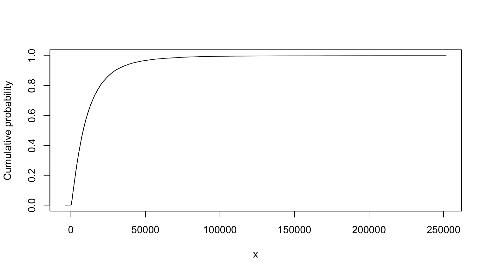
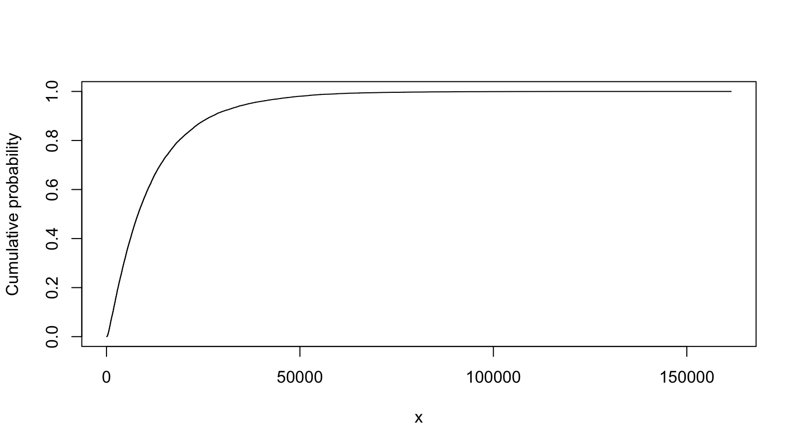

SRA Workshop 7
John Benninghoff
2021-12-05
Working notebook for SRA 2021 Workshop 7, “Monte Carlo simulation and probability bounds analysis in R with hardly any data (Instructors: Ferson & Grey)”
library(MASS)
library(sn)Instructions
Download sra.r and pba.r from https://sites.google.com/site/hardlyanydata and source
it into R. Set RStudio = TRUE for use within RStudio and
save the file. The library also requires the package sn.
Use rm(list = ls()) to clear R environment.
There is another version of pba.r on GitHub
Monte Carlo
Monte Carlo example from class using sra.R; contaminant
plume (from Lobascio), slide 37-39 in the workshop PowerPoint:
View the cumulative probability plot by entering the letter in the console.
source("assets/sra.R")## :sra> library loaded# nolint start
L <- uniform(80, 120) # [m], source-receptor distance
i <- uniform(0.0003, 0.0008) # [], hydraulic gradient
K <- lognormal(1000, 750) # [m yr1], hydraulic conductivity
n <- lognormal(0.25, 0.05) # [], effective soil porosity
BD <- lognormal(1650, 100) # [kg per m3], soil bulk density
foc <- uniform(0.0001, 0.005) # fraction organic carbon
Koc <- normal(10, 3) # [m3 per kg], partition coefficient
T <- (n + BD * foc * Koc) * L / (K * i) # all variables assumed independent
summary(T)##
## Monte Carlo distribution summary
## Mean: 12887.18
## Variance: 228437576
## Std Deviation: 15114.15
## Width of interquartile range: 12715.81
## Width of overall range: 261233.6
## Order statistics
## Left (min) value: -4166.121
## 1st percentile: 350.2458
## 5th percentile: 965.1783
## 25th percentile: 3696.558
## Median (50th%ile): 8176.438
## 75th percentile: 16412.37
## 95th percentile: 40546.87
## 99th percentile: 73524.35
## Right (max) value: 257067.4
## Replications: 20000T
## MC (min=-4166.1211650726, median=8176.43780508854, mean=12887.1799238441, max=257067.435891926)# nolint endTruncated version, from slide 40:
# nolint start
L <- uniform(80, 120) # [m], source-receptor distance
i <- uniform(0.0003, 0.0008) # [], hydraulic gradient
K <- lognormal(1000, 750) # [m yr1], hydraulic conductivity
K <- truncate(K, 300, 3000)
n <- lognormal(0.25, 0.05) # [], effective soil porosity
n <- truncate(n, 0.2, 0.35)
BD <- lognormal(1650, 100) # [kg per m3], soil bulk density
BD <- truncate(BD, 1500, 1750)
foc <- uniform(0.0001, 0.005) # fraction organic carbon
Koc <- normal(10, 3) # [m3 per kg], partition coefficient
Koc <- truncate(Koc, 5, 20)
T <- (n + BD * foc * Koc) * L / (K * i)
summary(T)##
## Monte Carlo distribution summary
## Mean: 12337.82
## Variance: 166655205
## Std Deviation: 12909.5
## Width of interquartile range: 12702.84
## Width of overall range: 136386.1
## Order statistics
## Left (min) value: 64.16568
## 1st percentile: 388.6349
## 5th percentile: 995.2419
## 25th percentile: 3753.658
## Median (50th%ile): 8220.271
## 75th percentile: 16456.5
## 95th percentile: 37094.16
## 99th percentile: 62875.48
## Right (max) value: 136450.3
## Replications: 20000T
## MC (min=64.165678094884, median=8220.27075572235, mean=12337.8202640216, max=136450.280016958)# nolint endMaximum entropy version, from slide 70:
T and Tind are pretty similar. In this case, the maximum entropy approach comes up with a similar distribution as the truncated approach.
# nolint start
L <- MEmmms(80, 120, 100, 11.55) # source-receptor distance
i <- MEmmms(0.0003, 0.0008, 0.00055, 0.0001443) # hydraulic gradient
K <- MEmmms(300, 3000, 1000, 750) # hydraulic conductivity
n <- MEmmms(0.2, 0.35, 0.25, 0.05) # effective soil porosity
BD <- MEmmms(1500, 1750, 1650, 100) # soil bulk density
foc <- MEmmms(0.0001, 0.005, 0.00255, 0.001415) # fraction organic carbon
Koc <- MEmmms(5, 20, 10, 3) # organic partition coefficient
Tind <- (n + BD * foc * Koc) * L / (K * i)
summary(Tind)##
## Monte Carlo distribution summary
## Mean: 13929.19
## Variance: 220990666
## Std Deviation: 14865.75
## Width of interquartile range: 15392.67
## Width of overall range: 154388.8
## Order statistics
## Left (min) value: 82.26246
## 1st percentile: 352.0638
## 5th percentile: 968.0146
## 25th percentile: 3677.903
## Median (50th%ile): 8620.884
## 75th percentile: 19070.57
## 95th percentile: 44319.25
## 99th percentile: 69378.12
## Right (max) value: 154471.1
## Replications: 20000Tind
## MC (min=82.2624620595068, median=8620.88439124483, mean=13929.1884170538, max=154471.106588622)# nolint endProbability Bounds Analysis
Conduct the same analysis using PBA, from slide 162. See the important note from slide 162 below.
Note: N.B. The implementation of mmms in pba.r is incomplete so, while its results are bounds, they are not best possible bounds
# ideally we'd clear the environment with `rm(list = ls())`, but that doesn't work here;
# an alternative would be to move this to a separate notebook. This approach appears to be OK,
# outputs from running just the setup and the entire notebook are the same.
# this code breaks build_analysis_site() - commented out because of that.
# uncomment this code and it should work within the notebook in RStudio.
# nolint start
# source("assets/pba.R")
#
# L <- mmms(80, 120, 100, 11.55) # source-receptor distance
# i <- mmms(0.0003, 0.0008, 0.00055, 0.0001443) # hydraulic gradient
# K <- mmms(300, 3000, 1000, 750) # hydraulic conductivity
# n <- mmms(0.2, 0.35, 0.25, 0.05) # effective soil porosity
# BD <- mmms(1500, 1750, 1650, 100) # soil bulk density
# foc <- mmms(0.0001, 0.005, 0.00255, 0.001415) # fraction organic carbon
# Koc <- mmms(5, 20, 10, 3) # organic partition coefficient
#
# up <- 100000 # detail
# Tind <- (n + BD * foc * Koc) * L / (K * i)
# Tind <- pmin(Tind, up)
#
# summary(Tind)
# Tind
# nolint end